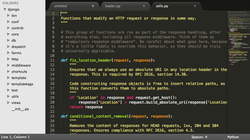

Sublime Text
Dieser Artikel wurde für die folgenden Ubuntu-Versionen getestet:
Ubuntu 16.04 Xenial Xerus
Ubuntu 14.04 Trusty Tahr
Zum Verständnis dieses Artikels sind folgende Seiten hilfreich:
Sublime Text  ist ein kommerzieller Texteditor für Linux, Mac OS X und Microsoft Windows, der von Jon Skinner entwickelt wird. Er wurde in den Sprachen Python und C++ geschrieben und eignet sich wegen seinen Funktionen überwiegend für Entwickler. Im November 2007 wurde die erste Version präsentiert, die ausschließlich unter Windows lauffähig war. Fünf Jahre später wurde schließlich Sublime Text 2 veröffentlicht, die neben weiteren wichtigen Neuerungen Linux und Mac OS X unterstützte. Am 29. Januar 2013 wurde die erste Betaversion des Nachfolgers Sublime Text 3 freigegeben.
ist ein kommerzieller Texteditor für Linux, Mac OS X und Microsoft Windows, der von Jon Skinner entwickelt wird. Er wurde in den Sprachen Python und C++ geschrieben und eignet sich wegen seinen Funktionen überwiegend für Entwickler. Im November 2007 wurde die erste Version präsentiert, die ausschließlich unter Windows lauffähig war. Fünf Jahre später wurde schließlich Sublime Text 2 veröffentlicht, die neben weiteren wichtigen Neuerungen Linux und Mac OS X unterstützte. Am 29. Januar 2013 wurde die erste Betaversion des Nachfolgers Sublime Text 3 freigegeben.

Das Programm richtet sich an erfahrene Entwickler, die kein Problem damit haben, den Editor mit Hilfe von JSON-Textdateien zu konfigurieren (das Programm ist daher auch nicht deutschsprachig). Hat man das System mit reduzierter Oberfläche, Plug-in-API und den außergewöhnlichen Editierfähigkeiten erst einmal verstanden, lässt sich das Programm vollkommen an die eigenen Wünsche anpassen.
Beide Versionen können für Evaluierungszwecke ohne Einschränkungen getestet werden. Um letztendlich alle Funktionen dauerhaft nutzen zu können, ist jedoch eine kostenpflichtige Lizenz erforderlich. Eine Einzellizenz kann für ca. 70 $ (USD) auf der Herstellerseite über Paypal erworben werden. Diese ist nicht plattformbezogen und für alle Versionen von Sublime Text gültig. Unter Help → Enter Licence kann diese dann eingefügt werden.
Echte Open-Source-Software ist dagegen der Editor Lime Text , der als freie Alternative zu Sublime Text entwickelt wurde.
Welche Version?¶
Prinzipiell besteht kein Grund mehr, die neuere Version 3 trotz ihres Beta-Status zu meiden (Stand: 05/2015). Sublime Text 3 startet im Vergleich mit dem Vorgängers schneller, da Plugins nun keinen Einfluss mehr auf den Startprozess nehmen. Die Geschwindigkeit der Funktion "Replace All" wurde deutlich verbessert. Die API basiert nun auf Python 3.3 (vorher Python 2.x), wodurch manche Plugins angepasst werden müssen.
Bei Sublime Text 3 ist es nun möglich, mehrere Dateien eines Projekts mittels Symbolindizierung zu durchsuchen. Das Wechseln zwischen mehreren Fenstern wurde effizienter gestaltet, da sich diese nun leichter erstellt und löschen lassen. Auch das Verschieben von Dateien zwischen den jeweiligen Fenstern ist nun deutlich transparenter.
Installation¶
 Sublime Text befindet sich nicht in den offiziellen Paketquellen und lässt sich am einfachsten über ein "Personal Packages Archiv" (PPA) [1] installieren. Der Hauptvorteil gegenüber einer manuellen Installation: man wird bei Updates automatisch benachrichtigt. Das wirkt sich aber nur bei Sublime Text 3 aus, da beim Vorgänger seit 2013 keine Aktualisierung mehr veröffentlicht wurde.
Sublime Text befindet sich nicht in den offiziellen Paketquellen und lässt sich am einfachsten über ein "Personal Packages Archiv" (PPA) [1] installieren. Der Hauptvorteil gegenüber einer manuellen Installation: man wird bei Updates automatisch benachrichtigt. Das wirkt sich aber nur bei Sublime Text 3 aus, da beim Vorgänger seit 2013 keine Aktualisierung mehr veröffentlicht wurde.
Je nach gewünschter Version ist ein anderes PPA zu wählen.
Sublime Text 3 (Beta)¶
Adresszeile zum Hinzufügen des PPAs:
ppa:webupd8team/sublime-text-3
Hinweis!
Zusätzliche Fremdquellen können das System gefährden.
Ein PPA unterstützt nicht zwangsläufig alle Ubuntu-Versionen. Weitere Informationen sind der  PPA-Beschreibung des Eigentümers/Teams webupd8team zu entnehmen.
PPA-Beschreibung des Eigentümers/Teams webupd8team zu entnehmen.
Damit Pakete aus dem PPA genutzt werden können, müssen die Paketquellen neu eingelesen werden.
Nach dem Aktualisieren der Paketquellen kann die Anwendung über folgendes Paket installiert werden [2]:
sublime-text-installer (ppa)
 mit apturl
mit apturl
Paketliste zum Kopieren:
sudo apt-get install sublime-text-installer
sudo aptitude install sublime-text-installer
Sublime Text 2¶
Adresszeile zum Hinzufügen des PPAs:
ppa:webupd8team/sublime-text-2
Hinweis!
Zusätzliche Fremdquellen können das System gefährden.
Ein PPA unterstützt nicht zwangsläufig alle Ubuntu-Versionen. Weitere Informationen sind der PPA-Beschreibung des Eigentümers/Teams webupd8team zu entnehmen.
Damit Pakete aus dem PPA genutzt werden können, müssen die Paketquellen neu eingelesen werden.
Nach dem Aktualisieren der Paketquellen kann die Anwendung über folgendes Paket installiert werden:
sublime-text (ppa)
mit apturl
Paketliste zum Kopieren:
sudo apt-get install sublime-text
sudo aptitude install sublime-text
Manuell¶
Über die Projektseite stehen vorkompilierte Binärdateien als Archivdatei für 32- und 64-bit-Systeme zur Verfügung, die zur Nutzung nur in einen beliebigen Ordner entpackt [3] werden müssen. Nur für Sublime Text 3 stehen alternativ Fremdpakete im DEB-Format zur Verfügung [4], die von Ein- und Umsteigern grundsätzlich bevorzugt werden sollten.
Hinweis!
Fremdsoftware kann das System gefährden.

Verwendung¶
Das Programm kann nach der Installation sofort gestartet werden. Entweder über den bei der Installation über das PPA oder die Fremdpakete angelegten Programmstarter oder mit dem folgenden Befehl (bei einer manuellen Installation ist der Pfad entsprechend anzupassen):
Sublime Text 3:
/opt/sublime_text/sublime_text
Sublime Text 2:
/opt/sublime_text_2/sublime_text
Zu beiden Versionen existiert eine ausführliche, aber ausschließlich englischsprachige Dokumentation (siehe den Abschnitt Links weiter unten).
Erweiterungen¶
Wenn die eingebauten Funktionen nicht ausreichen, kann Sublime Text mit Erweiterungen (Plugins) ausgestattet werden. Grundlage zur Installation dieser Erweiterungen ist der Erweiterungsmanager Package Control . Den Befehl zur Installation, der über die im Editor integrierte Konsole eingegeben wird, gibt es auf der offiziellen Webseite .
Nach einem Neustart des Programms kann mit folgendem Befehl das Erweiterungsverzeichnis durchsucht werden:
install
Alternativ steht diese Funktion über "Preferences -> Package Control" zur Verfügung.
Einstellungen¶
Die Konfiguration wird in folgenden Ordnern im Homeverzeichnis gespeichert:
Sublime Text 3: ~/.config/sublime-text-3/
Sublime Text 2: ~/.config/sublime-text-2/
Links¶
Dokumentation (Anleitungen, Tastenkürzel, Erweiterungen)
Sublime Text - Wikipedia
How do I install Sublime Text 2/3?
- Hinweise zur Installation, 06/2014Sublime Text: Na ja, ich hab’s versucht
 - Vergleich mit anderen Editoren. Blogbeitrag, 09/2013
- Vergleich mit anderen Editoren. Blogbeitrag, 09/2013Informationen zu Sublime Text 2
- Blogbeitrag, 06/2012Sublime Text 2.0.2
- heise Software-VerzeichnisEditoren
 Programmübersicht
Programmübersicht
- Erstellt mit Inyoka
-
 2004 – 2017 ubuntuusers.de • Einige Rechte vorbehalten
2004 – 2017 ubuntuusers.de • Einige Rechte vorbehalten
Lizenz • Kontakt • Datenschutz • Impressum • Serverstatus -
Serverhousing gespendet von